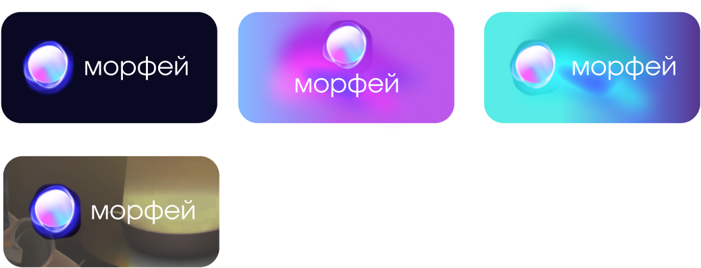

О БРЕНДЕ
01
Морфей — медиа-сервис про сон, который
стремится рассказать людям о необходимости
здорового сна для организма.
ЦЕННОСТИ
02
Забота
Мы заботимся о вашем здоровье
и верим, что здоровый сон является
основой хорошего самочувствия
Качество
Мы предоставляем только достоверную и проверенную информацию
Персонализация
Каждый человек уникален, и у каждого
свои потребности в области сна.
Мы предлагаем подборки статьей
и тесты
Доступность
Наша цель — сделать информацию о здоровом сне доступной для всех. Мы публикуем статьи, видео, интервью и тесты на нашем сайте, а также активно используем социальные сети
МИССИЯ
03
Повышение осведомлённости о важности сна
Медиа-сервис будет предоставлять информацию о научных
исследованиях, посвящённых сну, и его влиянии на здоровье
человека. Это поможет людям понять, почему качественный сон
так важен для их благополучия.
ЛОГОТИП
04
ОСНОВА
Фундамент логотипа составляет
шрифт Involve. Он создаёт эффект
движения и подчёркивает идею о том,
что сон — это непрерывный процесс,
который постоянно меняется.
МЕТАФОРА
Градиентные цвета также
ассоциируются с плавным течением
времени и спокойствием, которое
приходит во время сна. Они создают
атмосферу умиротворения и гармонии
Логотип должен размещаться на контрастном фоне: в качестве
подложки используются фирменные цвета бренда или градиенты
Нельзя растягивать и видоизменять форму логотипа
ЦВЕТА
05
Примеры готовых градиентов
ТИПОГРАФИКА
06
На сайте и в айдентике используется шрифт Involve
в начертаниях Regular, Medium и Bold
INVOLVE
Regular
AA BB CC DD EE FF GG HH II JJ KK LL MM NN OO PP QQ RR SS TT UU VV WW XX YY ZZ
Аа Бб Вв Гг Дд Ее Ёё Жж Зз Ии Йй Кк Лл Мм Нн Оо Пп Рр Сс Тт Уу Фф Хх Цц Чч Шш Щщ Ъъ Ыы Ьь Ээ Юю Яя
0 1 2 3 4 5 6 7 8 9
INVOLVE
Medium
AA BB CC DD EE FF GG HH II JJ KK LL MM NN OO PP QQ RR SS TT UU VV WW XX YY ZZ
Аа Бб Вв Гг Дд Ее Ёё Жж Зз Ии Йй Кк Лл Мм Нн Оо Пп Рр Сс Тт
Уу Фф Хх Цц Чч Шш Щщ Ъъ Ыы Ьь Ээ Юю Яя
0 1 2 3 4 5 6 7 8 9
INVOLVE
Bold
AA BB CC DD EE FF GG HH II JJ KK LL MM NN OO PP QQ RR SS TT UU VV WW XX YY ZZ
Аа Бб Вв Гг Дд Ее Ёё Жж Зз Ии Йй Кк Лл Мм Нн Оо Пп Рр Сс Тт Уу Фф Хх Цц Чч Шш Щщ Ъъ Ыы Ьь Ээ Юю Яя
0 1 2 3 4 5 6 7 8 9
СЕТКА
07
ГРАФИКА
08
Легкие образы различных животных, которые, могут встретиться
во сне. Животные, как будто состоят из света и дыма. Они окружены
мягким, глубоким синим фоном, который подчеркивает исходящее от них свечение.
На фоне может располагаться радиальный градиент на основе
фирменных цветов, которые подчеркивает графику.
НОСИТЕЛИ
09